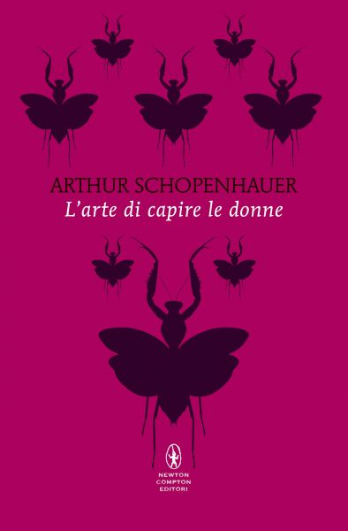

15:46 · 3 OPERE
Visita alla tomba di Arthur Schopenhauer.
Il filo del discorso
Una conversazione in inglese presso la tomba di Schopenhauer intreccia osservazioni sul luogo, aneddoti e temi filosofici. La memoria di un’iscrizione funeraria e il richiamo a Camus aprono il confronto sulla morte; Goethe e il saggio sulle donne conducono a osservazioni sul carattere del filosofo. Il dialogo passa poi al tempo libero, al desiderio e alla differenza fra pensiero e volontà, con riferimenti alla vita sociale e ai rapporti fra filosofi. Gli Aforismi sulla saggezza della vita accompagnano il finale sul senso della lettura e sulla distanza fra comprare libri e studiarli.
I libri nel discorso

Il mito di Sisifo
Identificazione probabile
Note sul riferimento
Copertina: Bompiani · Tascabili · edizione italiana di riferimento
Copertina autentica di riferimento, controllata visivamente. L’edizione non è identificata come quella usata nel video.
Camus e il problema filosofico del suicidio richiamano probabilmente l’apertura del Mito di Sisifo; titolo non pronunciato.

Sulle donne (Über die Weiber)
Note sul riferimento
Copertina della raccolta: Newton Compton · Classici pop Newton · 2026 · raccolta
Copertina della raccolta contenente Saggio sulle donne e Metafisica dell’amore sessuale, non di un volume autonomo intitolato Sulle donne. Edizione non accertata nel video.
È nominato il saggio On Women di Schopenhauer.
Aforismi sulla saggezza della vita
Note sul riferimento
Copertina: Intra · Il Disoriente · 2022 · traduzione di Oscar Chilesotti
Copertina autentica di riferimento, controllata visivamente. L’edizione non è identificata come quella usata nel video.
È pronunciato il titolo Aphorismen zur Lebensweisheit.